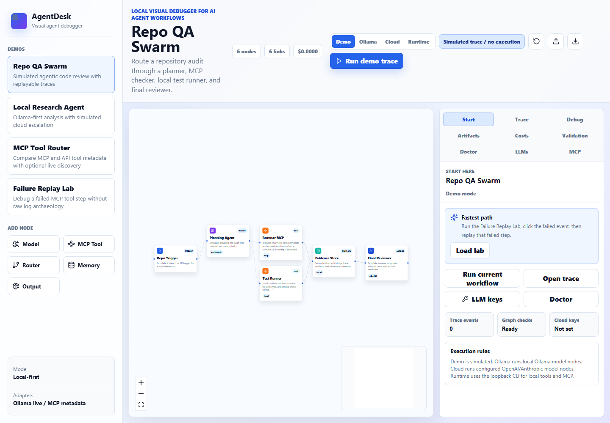

Replay the failure. Inspect every prompt, tool call, result, and artifact.
AgentDesk is the debugging surface developers reach for before production orchestration: click-linked traces, failed-step replay, graph validation, MCP import with live runtime discovery, local Ollama, session-only BYOK model config, and redacted evidence exports.
BYOK cloud calls are browser-direct and can be blocked by provider CORS or organization policy. Prompts and responses become trace evidence; API keys are session-only and not exported.

A debugger, not another workflow builder.
Launch-ready product tour.


Everything needed for a GitHub launch.
The repo now includes this GitHub Pages landing page, launch copy, screenshot assets, Runtime mode notes, verification gates, CI, package smoke checks, and deployment notes.